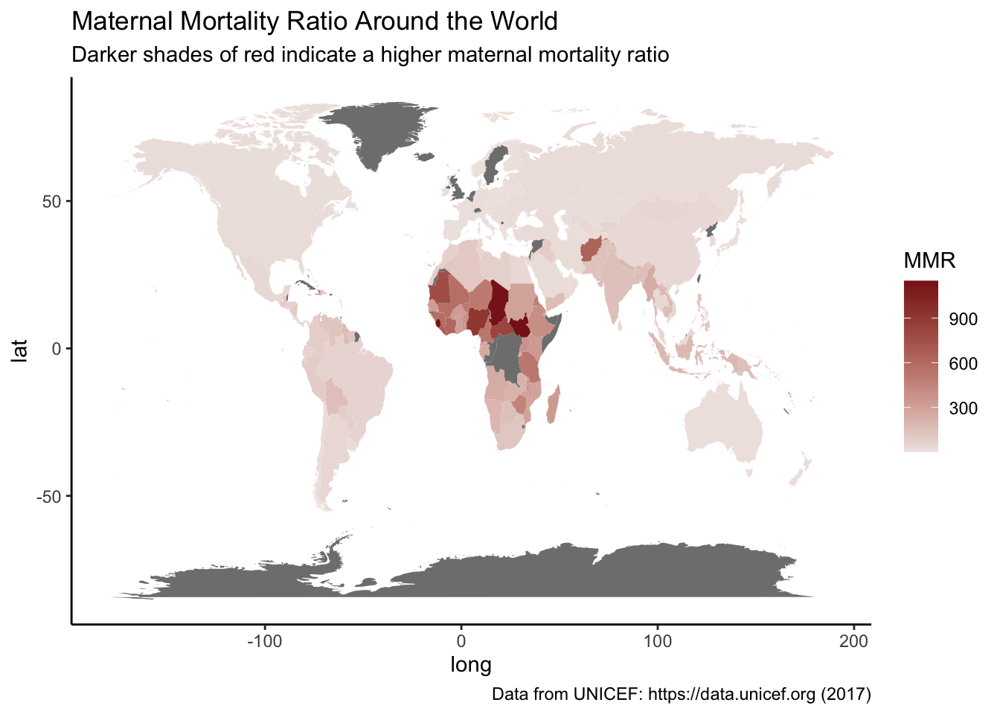
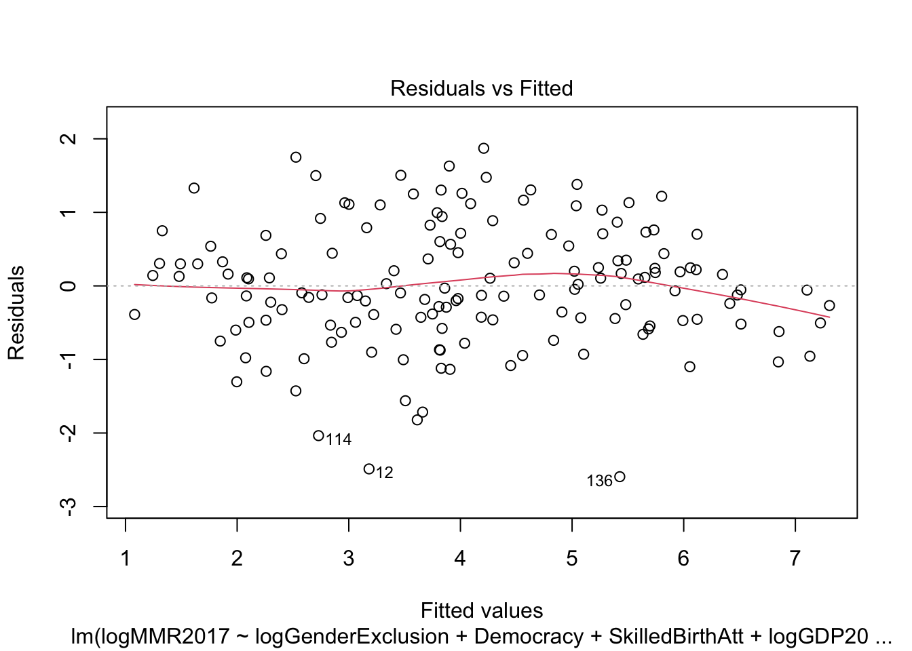
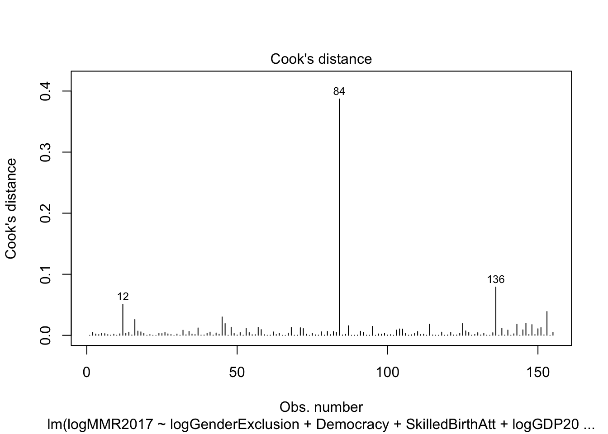

Code
library(tidyverse)
library(readxl)
library(summarytools)
library(maps)
library(viridis)
library(stargazer)
library(GGally)
library(kableExtra)
knitr::opts_chunk$set(echo = TRUE, warning=FALSE, message=FALSE)library(tidyverse)
library(readxl)
library(summarytools)
library(maps)
library(viridis)
library(stargazer)
library(GGally)
library(kableExtra)
knitr::opts_chunk$set(echo = TRUE, warning=FALSE, message=FALSE)Despite advancements in health and technology, maternal mortality remains a significant public health challenge around the world. According to the World Health Organization, approximately 287,000 women died from complications related to pregnancy or childbirth in 2020.1 Recently it was reported that global declines in maternal mortality have stalled,2 even increased in the United States,3 and data from 2020 has shown the pandemic brought a sharp uptick in maternal deaths.4 The World Health Organization has stated that the majority of maternal deaths are preventable.5
Past research has investigated factors associated with higher rates of maternal mortality, both at the level of the individual and country. Many studies have found that factors associated with maternal healthcare, such as the presence of a skilled attendant at birth and antenatal visits, are strongly associated with maternal mortality.6 7 Other studies considering social determinants of health have found that factors such as adult literacy, education, national income levels, and access to water and sanitation are all associated with maternal mortality.8 9 The majority of maternal deaths occur in low-income countries.10
This research intends to explore the relationship between women’s political inclusion and maternal mortality, while controlling for confounding variables related to the development of a nation’s economy, health sector, and political system. In addition, this research will examine the mechanism through which women’s political inclusion might impact maternal mortality by considering the percentage of skilled attendants at birth as a mediator variable.
Past research has found a link between higher levels of gender equality and women’s political inclusion and reduced maternal mortality, although analysis has primarily focused on individual countries or a subset of countries (typically lower-income).11 12 This research will investigate whether these trends hold true when looking at over 150 countries from all levels of economic development.
In short, this analysis seeks to answer the following two research questions:
Hypothesis 1: Where gender exclusion is low and political inclusion of women is high, health outcomes are better and maternal mortality is low. This will hold true even when controlling for variables which are known to have an effect on both women’s political inclusion and maternal mortality.
Hypothesis 2: The political inclusion and empowerment of women has a positive effect on national maternal health infrastructure and specifically the increase of skilled attendants present at birth, which in turn has the effect of reducing maternal mortality. In other words, the relationship between gender exclusion and maternal mortality is mediated by the presence of skilled attendants at birth.
In investigating these two hypotheses, this analysis will explore the link between the political inclusion of women and reduced maternal mortality and try to provide insight into the mechanism through which this occurs.
This research will utilize several datasets in order to capture all of the relevant variables.
The dependent variable, Maternal Mortality Ratio, is drawn from the Maternal and newborn health table from UNICEF. This data is from 2017.13
According to the World Health Organization, the maternal mortality ratio (MMR) is defined as: “the number of maternal deaths during a given time period per 100,000 live births during the same time period.”
Maternal deaths are defined as: “deaths from any cause related to or aggravated by pregnancy or its management (excluding accidental or incidental causes) during pregnancy and childbirth or within 42 days of termination of pregnancy…”14
The explanatory variable featured in this analysis will be drawn from the Varieties of Democracy V-Dem dataset.15 From there, the following variable will be used:
(Political) exclusion by gender index16
As defined by the V-Dem codebook: “Exclusion is when individuals are denied access to services or participation in governed spaces (spaces that are part of the public space and the government should regulate, while excluding private spaces and organizations except when exclusion in those private spheres is linked to exclusion in the public sphere) based on their identity or belonging to a particular group.”17 This index is formed from four other indicators from V-Dem: power distributed by gender, equality in respect for civil liberites by gender, access to public services by gender, access to state jobs by gender, and access to state business opportunities by gender.
This variable is on an interval scale, from low to high (0-1). The codebook notes that the point estimates are reversed here, so unlike most of the variables from V-Dem, for this variable the “lower scores indicate a normatively better situation…and higher scores a normatively worse situation”.18 So higher values of this variable indicate more gender exclusion and less political inclusion of women. In order to match the timeframe of the dependent variable, the 2017 values have been used for this analysis.
In addition to the dependent and explanatory variables, a mediator variable will also be considered in this analysis. As noted above, research has shown that the presence of skilled attendants at birth has a negative effect on maternal mortality.19 The second hypothesis of this research is that more political inclusion of women will improve national maternal healthcare and have the effect of increasing the percentage of births with a skilled attendant, which will in turn reduce maternal mortality. The mediator variable is the percentage of births that occur with a skilled attendant in each country, and it will be drawn from the same Maternal and newborn health table from UNICEF that the maternal mortality data is from.20
Three confounding variables that seek to account for the economic and political development of a country will be considered in order to control for their effect on both maternal mortality and women’s political exclusion.
GDP per capita will be used as a way to control for a nation’s economic development. This variable is drawn from the International Monetary Fund (IMF)’s data.21 GDP per capita from 2017 will be used in order to be consistent with the rest of the data.
In addition to GDP, this analysis will also include a confounding variable on the government expenditure on health as a percentage of GDP. This will be drawn from the Economic Indicators table from UNICEF. This data is from 2017.22
Finally, a variable capturing the level of democracy in a country will be used as a confounding variable in this analysis. This variable was drawn from the V-Dems data.23 According to the codebook, this variable was “computed by subtracting the autocracy score from the democracy score. The resulting unified POLITY scale ranges from +10 (strongly democratic) to -10 (strongly autocratic).”24 This variable will seek to control for social and political elements that may effect both gender exclusion and maternal mortality.
The resulting data used for analysis will be a cross-sectional, cross-national sample of data from 155 countries (some observations were removed because of missing values) on all of the variables noted here: maternal mortality, skilled birth attendants, gender exclusion, GDP, percentage of GDP spent on health, and democracy. All variables are for the year 2017.
Data for this analysis will be drawn from multiple datasets. First, data from the Maternal and Newborn Health table from UNICEF for the explanatory variable and the confounding variable on skilled birth attendants will be loaded and cleaned. A second dataset from UNICEF will be loaded and joined with this one because it includes a world regions variable that will allow us to group and visualize the data. This variable will not be used in regression analysis.
# Load the dataset
MaternalNewbornHealth <- read_excel("UNICEF_mat_newborn.xlsx", skip = 6,
col_names= c("Countries_and_areas", rep("delete", 8),
"ALOneVisit", "delete", "ALFourVisits",
rep("delete", 3), "SkilledBirthAtt",
rep("delete", 13),
"Maternal_Mortality_Ratio_2017", "delete",
"delete")) %>%
select(!contains("delete"))
# skip the first five rows, rename all of the variables we want and delete the ones we don't
# remove the last 57 rows, which include summaries and endnotes, not data
MNH <- slice(MaternalNewbornHealth, 1:(nrow(MaternalNewbornHealth) - 57))
# instead of NAs, this dataset has " - ", we will remove them here
MNH <- MNH %>% filter(!str_detect(Maternal_Mortality_Ratio_2017, "-"))
MNH <- MNH %>% filter(!str_detect(SkilledBirthAtt, "-"))
# Turning everything numeric
MNH$`SkilledBirthAtt` <- as.numeric(MNH$`SkilledBirthAtt`)
MNH$`Maternal_Mortality_Ratio_2017` <- as.numeric(MNH$`Maternal_Mortality_Ratio_2017`)
# In order to disaggregate and reorder data by region and by developmental area, we'll join this data with another UNICEF dataset with those variables (region and sub-region).
Regions <- read_excel("Completion_rate_8.xlsx", sheet = 2, skip = 2,
col_names= c("delete", "Countries_and_areas", "Region",
"Sub-Region", rep("delete", 19))) %>%
select(!contains("delete"))
# remove the last 34 rows, which include summaries and endnotes, not data
Regions <- slice(Regions, 1:(nrow(Regions) - 34))
# Join regions with the MNH data
MNH_wRegion <- full_join(MNH, Regions, by = "Countries_and_areas")
# remove the countries where we had no MMR data
MNH_wRegion <- slice(MNH_wRegion, 1:(nrow(MNH_wRegion) - 25))
# Recode the values in the region and subregion variables. Recode development variables so we can possibly use it in lm as numeric variable
MNH_final <- MNH_wRegion %>%
mutate("WorldRegion" = case_when(
Region == "EAP" ~ "East Asia & Pacific",
Region == "ECA" ~ "Europe & Central Asia",
Region == "LAC" ~ "Latin America & Caribbean",
Region == "MENA" ~ "Middle East & North Africa",
Region == "NA" ~ "North America",
Region == "SA" ~ "South Asia",
Region == "SSA" ~ "Sub-Saharan Africa")) %>%
mutate("SubRegion" = case_when(
`Sub-Region` == "WE" ~ "Western Europe",
`Sub-Region` == "WCA" ~ "West & Central Africa",
`Sub-Region` == "ESA" ~ "Eastern & Southern Africa",
`Sub-Region` == "EECA" ~ "Eastern Europe & Central Asia",
`Sub-Region` == "EAP" ~ "East Asia & Pacific",
`Sub-Region` == "ECA" ~ "Europe & Central Asia",
`Sub-Region` == "LAC" ~ "Latin America & Caribbean",
`Sub-Region` == "MENA" ~ "Middle East & North Africa",
`Sub-Region` == "NA" ~ "North America",
`Sub-Region` == "SA" ~ "South Asia",
`Sub-Region` == "SSA" ~ "Sub-Saharan Africa"))
# select variables in the order we want for the final data frame, leave out abbreviated names
MNH_final <- select(MNH_final, Countries_and_areas, WorldRegion, SubRegion, Maternal_Mortality_Ratio_2017, SkilledBirthAtt)Next the Varieties of Democracy data will be added. It is from this data that the explanatory variable related to the political inclusion of women and the confounding variable related to democracy will be drawn.
V_DEM <- readRDS("V-Dem-CY-Full+Others-v13.rds")
# Select just the variables we need for this analysis and filter to year 2017.
V_DEM_trim <- V_DEM %>%
filter(year == 2017) %>%
select(country_name, e_p_polity, v2xpe_exlgender)
# rename the country_name variable so we can join it with the UNICEF data later.
V_DEM_trim <- rename(V_DEM_trim, "Countries_and_areas" = country_name)
# Change some of the country names where the V-Dem dataset differs from the UNICEF data.
V_DEM_trim$Countries_and_areas[V_DEM_trim$Countries_and_areas == "Moldova"] <- "Republic of Moldova"
V_DEM_trim$Countries_and_areas[V_DEM_trim$Countries_and_areas == "Laos"] <- "Lao People's Democratic Republic"
V_DEM_trim$Countries_and_areas[V_DEM_trim$Countries_and_areas == "The Gambia"] <- "Gambia"
V_DEM_trim$Countries_and_areas[V_DEM_trim$Countries_and_areas == "Republic of the Congo"] <- "Congo"
V_DEM_trim$Countries_and_areas[V_DEM_trim$Countries_and_areas == "Syria"] <- "Syrian Arab Republic"
V_DEM_trim$Countries_and_areas[V_DEM_trim$Countries_and_areas == "Iran"] <- "Iran (Islamic Republic of)"
V_DEM_trim$Countries_and_areas[V_DEM_trim$Countries_and_areas == "Cape Verde"] <- "Cabo Verde"
V_DEM_trim$Countries_and_areas[V_DEM_trim$Countries_and_areas == "Ivory Coast"] <- "Côte d'Ivoire"
V_DEM_trim$Countries_and_areas[V_DEM_trim$Countries_and_areas == "Venezuela"] <- "Venezuela (Bolivarian Republic of)"
V_DEM_trim$Countries_and_areas[V_DEM_trim$Countries_and_areas == "Tanzania"] <- "United Republic of Tanzania"
V_DEM_trim$Countries_and_areas[V_DEM_trim$Countries_and_areas == "South Korea"] <- "Republic of Korea"
V_DEM_trim$Countries_and_areas[V_DEM_trim$Countries_and_areas == "North Korea"] <- "Democratic People's Republic of Korea"
V_DEM_trim$Countries_and_areas[V_DEM_trim$Countries_and_areas == "Vietnam"] <- "Viet Nam"
V_DEM_trim$Countries_and_areas[V_DEM_trim$Countries_and_areas == "Bolivia"] <- "Bolivia (Plurinational State of)"
V_DEM_trim$Countries_and_areas[V_DEM_trim$Countries_and_areas == "United States of America"] <- "United States"
V_DEM_trim$Countries_and_areas[V_DEM_trim$Countries_and_areas == "Russia"] <- "Russian Federation"
V_DEM_trim$Countries_and_areas[V_DEM_trim$Countries_and_areas == "Burma/Myanmar"] <- "Myanmar"The confounding variable GDP per capita will be pulled from a dataset from the International Monetary Fund.
imf_GDP <- read_excel("imf-dm-export-20230322.xls")
# Select just the variables we need for this analysis.
imf_GDP_2017 <- select(imf_GDP, `GDP per capita, current prices\n (U.S. dollars per capita)`, `2017`)
# rename the country_name variable so we can join it with the UNICEF data later.
imf_GDP_2017 <- rename(imf_GDP_2017, "Countries_and_areas" = `GDP per capita, current prices\n (U.S. dollars per capita)`)
# change the GDP per capita variable to numeric.
imf_GDP_2017$`2017` <- as.numeric(imf_GDP_2017$`2017`)
# Change some of the country names where the IMF dataset differs from the
# UNICEF data.
imf_GDP_2017$Countries_and_areas[imf_GDP_2017$Countries_and_areas == "Bahamas, The"] <- "Bahamas"
imf_GDP_2017$Countries_and_areas[imf_GDP_2017$Countries_and_areas == "Bolivia"] <- "Bolivia (Plurinational State of)"
imf_GDP_2017$Countries_and_areas[imf_GDP_2017$Countries_and_areas == "China, People's Republic of"] <- "China"
imf_GDP_2017$Countries_and_areas[imf_GDP_2017$Countries_and_areas == "Congo, Dem. Rep. of the"] <- "Democratic Republic of the Congo"
imf_GDP_2017$Countries_and_areas[imf_GDP_2017$Countries_and_areas == "Congo, Republic of"] <- "Congo"
imf_GDP_2017$Countries_and_areas[imf_GDP_2017$Countries_and_areas == "Czech Republic"] <- "Czechia"
imf_GDP_2017$Countries_and_areas[imf_GDP_2017$Countries_and_areas == "Gambia, The"] <- "Gambia"
imf_GDP_2017$Countries_and_areas[imf_GDP_2017$Countries_and_areas == "Iran"] <- "Iran (Islamic Republic of)"
imf_GDP_2017$Countries_and_areas[imf_GDP_2017$Countries_and_areas == "Korea, Republic of"] <- "Republic of Korea"
imf_GDP_2017$Countries_and_areas[imf_GDP_2017$Countries_and_areas == "Kyrgyz Republic"] <- "Kyrgyzstan"
imf_GDP_2017$Countries_and_areas[imf_GDP_2017$Countries_and_areas == "Lao P.D.R."] <- "Lao People's Democratic Republic"
imf_GDP_2017$Countries_and_areas[imf_GDP_2017$Countries_and_areas == "Micronesia, Fed. States of"] <- "Micronesia (Federated States of)"
imf_GDP_2017$Countries_and_areas[imf_GDP_2017$Countries_and_areas == "Moldova"] <- "Republic of Moldova"
imf_GDP_2017$Countries_and_areas[imf_GDP_2017$Countries_and_areas == "Slovak Republic"] <- "Slovakia"
imf_GDP_2017$Countries_and_areas[imf_GDP_2017$Countries_and_areas == "South Sudan, Republic of"] <- "South Sudan"
imf_GDP_2017$Countries_and_areas[imf_GDP_2017$Countries_and_areas == "Syria"] <- "Syrian Arab Republic"
imf_GDP_2017$Countries_and_areas[imf_GDP_2017$Countries_and_areas == "São Tomé and Príncipe"] <- "Sao Tome and Principe"
imf_GDP_2017$Countries_and_areas[imf_GDP_2017$Countries_and_areas == "Tanzania"] <- "United Republic of Tanzania"
imf_GDP_2017$Countries_and_areas[imf_GDP_2017$Countries_and_areas == "Türkiye, Republic of"] <- "Turkey"
imf_GDP_2017$Countries_and_areas[imf_GDP_2017$Countries_and_areas == "Venezuela"] <- "Venezuela (Bolivarian Republic of)"
imf_GDP_2017$Countries_and_areas[imf_GDP_2017$Countries_and_areas == "Vietnam"] <- "Viet Nam"The last confounding variable on health expenditure data will be drawn from the UNICEF Economic Indicators data.
## Add in Economic Indicator data
UNICEF_Econ_Indicators <- read_excel("UNICEF_Econ-Indicators.xlsx", skip = 6,
col_names= c("Countries_and_areas", "delete", "delete",
"delete", "Expend_Health_pct_GDP",
rep("delete", 13))) %>%
select(!contains("delete"))
# skip the first five rows, rename all of the variables we want and delete the ones we don't want
# remove the last 37 rows, which include summaries and endnotes, not data
UNICEF_EI <- slice(UNICEF_Econ_Indicators, 1:(nrow(UNICEF_Econ_Indicators) - 37))
# replace " - " with NA in all columns
UNICEF_EI[UNICEF_EI == "-"] <- NA
# Turning everything numeric
UNICEF_EI$`Expend_Health_pct_GDP` <- as.numeric(UNICEF_EI$`Expend_Health_pct_GDP`)Finally, all four datasets will be joined together.
# first we'll join the first UNICEF and V-DEM data.
JOIN_UNICEF_VDEM <- full_join(MNH_final, V_DEM_trim, by = "Countries_and_areas")
# then we'll add in the IMF data.
JOIN_UNICEF_VDEM_IMF <- full_join(JOIN_UNICEF_VDEM, imf_GDP_2017, by = "Countries_and_areas")
# then we'll add in the economic indicator UNICEF data
JOIN_UNICEF_VDEM_IMF_EI <- full_join(JOIN_UNICEF_VDEM_IMF, UNICEF_EI, by = "Countries_and_areas")
# remove the last 56 rows, which include notes, countries, and regions not in the original UN data
MMR_Combined <- slice(JOIN_UNICEF_VDEM_IMF_EI, 1:(nrow(JOIN_UNICEF_VDEM_IMF_EI) - 56))
# remove NAs for analysis
MMR_Combined <- na.omit(MMR_Combined)
# rename our variables for ease of use
MMR_Analysis <-rename(MMR_Combined, "Country" = Countries_and_areas,
"GenderExclusion" = v2xpe_exlgender,
"Democracy" = e_p_polity, "GDP_2017" = `2017`)Two additional variables will be created for this analysis: First, the GDP per capita variable needs to be logged so that linear regression analysis can be performed, creating a new logged GDP per capita variable. Second, the GDP variable will be binned into quartiles to use for grouping when describing and visualizing the data. This second variable will not be used in analysis since the same information on national GDP is captured in the logGDP2017 variable.
# show GDP quartiles to use for the quartiles variable
MMR_Analysis %>%
summarize("25th quantile" = quantile(x = GDP_2017, probs = .25),
"Median" = median(GDP_2017, na.rm = TRUE),
"75th quantile" = quantile(x = GDP_2017, probs = .75))# A tibble: 1 × 3
`25th quantile` Median `75th quantile`
<dbl> <dbl> <dbl>
1 1577. 4401. 13748.# create a GDP quartiles variable for exploratory analysis
MMR_Analysis <- MMR_Analysis %>%
mutate("GDP_Quartiles" = case_when(
GDP_2017 <= 1578 ~ "1st Quartile",
GDP_2017 >= 1578.01 & GDP_2017 <= 4402 ~ "2nd Quartile",
GDP_2017 >= 4402.01 & GDP_2017 <= 13749 ~ "3rd Quartile",
GDP_2017 >= 13749.01 ~ "4th Quartile")) %>%
mutate("logGDP2017" = log(GDP_2017))Let’s take a look at the final dataset.
glimpse(MMR_Analysis)Rows: 155
Columns: 11
$ Country <chr> "Afghanistan", "Albania", "Algeria", "An…
$ WorldRegion <chr> "South Asia", "Europe & Central Asia", "…
$ SubRegion <chr> "South Asia", "Eastern Europe & Central …
$ Maternal_Mortality_Ratio_2017 <dbl> 638, 15, 112, 241, 39, 26, 6, 5, 26, 14,…
$ SkilledBirthAtt <dbl> 58.8, 99.8, 98.8, 49.6, 99.5, 99.8, 98.7…
$ Democracy <dbl> -1, 9, 2, -2, 9, 5, 10, 10, -7, -10, 1, …
$ GenderExclusion <dbl> 0.766, 0.216, 0.355, 0.497, 0.098, 0.339…
$ GDP_2017 <dbl> 635.789, 4525.887, 4079.653, 4300.097, 1…
$ Expend_Health_pct_GDP <dbl> 0.4859748, 2.8415394, 4.0938535, 1.06878…
$ GDP_Quartiles <chr> "1st Quartile", "3rd Quartile", "2nd Qua…
$ logGDP2017 <dbl> 6.454867, 8.417569, 8.313767, 8.366393, …This data now contains information on 155 countries around the world, including the region and subregion they belong to, their ranking on democracy and gender exclusion indices, their national maternal mortality ratio, percentage of skill birth attendants present at birth, GDP, and percentage of GDP spent on health. In addition there are two variables created for this analysis that provide the quartile in which a country’s GDP falls, and the logged GDP. This data should provide us with the key variables and confounding variables to examine and analyze the relationship between the explanatory variable (GenderExclusion) and the dependent variable (Maternal_Mortality_Ratio_2017), as well as the possible role of a mediator variable (SkilledBirthAtt).
As noted above, the dependent variable for this research is the national maternal mortality ratio of each country in 2017. The following heatmap shows the Maternal_Mortality_Ratio_2017 in each country in the data. Note that darker shades indicate a higher maternal mortality rate.
# Load the world map data
world <- map_data("world")
## change the MNH data into what you need for the maps. select two variables,
# change the variable names for joining
MapMMR <- MMR_Analysis %>%
select(Country, Maternal_Mortality_Ratio_2017, GenderExclusion, SkilledBirthAtt) %>%
rename(region = Country)
# Use stringr::str_replace to edit the country names under the region variable
world$region <- str_replace(world$region, "Bolivia", "Bolivia (Plurinational State of)")
world$region <- str_replace(world$region, "Brunei", "Brunei Darussalam")
world$region <- str_replace(world$region, "Cape Verde", "Cabo Verde")
world$region <- str_replace(world$region, "Congo", "Republic of Congo")
world$region <- str_replace(world$region, "Ivory Coast", "Côte d'Ivoire")
world$region <- str_replace(world$region, "Czech Republic", "Czechia")
world$region <- str_replace(world$region, "North Korea", "Democratic People's Republic of Korea")
world$region <- str_replace(world$region, "Micronesia", "Micronesia (Federated States of)")
world$region <- str_replace(world$region, "Iran", "Iran (Islamic Republic of)")
world$region <- str_replace(world$region, "Laos", "Lao People's Democratic Republic")
world$region <- str_replace(world$region, "South Korea", "Republic of Korea")
world$region <- str_replace(world$region, "Moldova", "Republic of Moldova")
world$region <- str_replace(world$region, "Russia", "Russian Federation")
world$region <- str_replace(world$region, "Palestine", "State of Palestine")
world$region <- str_replace(world$region, "Syria", "Syrian Arab Republic")
world$region <- str_replace(world$region, "Tanzania", "United Republic of Tanzania")
world$region <- str_replace(world$region, "UK", "United Kingdom")
world$region <- str_replace(world$region, "USA", "United States")
world$region <- str_replace(world$region, "Venezuela", "Venezuela (Bolivarian Republic of)")
world$region <- str_replace(world$region, "Vietnam", "Viet Nam")
# Merge the world map data with the numeric data
world_data <- full_join(world, MapMMR, by = "region")
# Plot the map
ggplot(world_data, aes(x = long, y = lat, group = group, fill = Maternal_Mortality_Ratio_2017)) +
geom_polygon() +
scale_fill_gradient(low = "#EFE5E2", high = "#881c1c") +
labs(title = "Maternal Mortality Ratio Around the World",
subtitle = "Darker shades of red indicate a higher maternal mortality ratio",
caption = "Data from UNICEF: https://data.unicef.org (2017)",
fill = "MMR") +
theme_classic()
The distribution of the Maternal_Mortality_Ratio_2017 is right skewed, indicating that most countries in the data have low values for this variable. This also means that this might be a good variable to log for regression analysis.
MMR_Analysis %>%
ggplot( aes(x=Maternal_Mortality_Ratio_2017)) +
geom_density(fill="#EC7F5B", color="#EC7F5B", alpha=0.8) +
labs(title = "Distribution of Maternal Mortality Ratio Globally",
subtitle = "Data from 2017",
x = "Maternal Mortality Ratio", y = "Density") +
theme_bw()
The following graphs show that maternal mortality is the highest in countries with GDP in the lowest quartile and in Sub-Saharan Africa.
# box plot with individual data points
MMR_Analysis %>%
ggplot(aes(x = GDP_Quartiles, y = Maternal_Mortality_Ratio_2017, fill=GDP_Quartiles)) +
geom_boxplot() +
scale_fill_viridis(discrete = TRUE, alpha=0.6) +
geom_jitter(color="black", size=0.4, alpha=0.9) +
labs(title = "Maternal Mortality Ratio by Level of Development",
subtitle = "1st quartile = lowest GDP, 4th quartile = highest GDP",
x= " ", y = "Maternal Mortality Ratio", fill = "GDP Quartile",
caption = "Data from 2017") 
# box plot with individual data points
MMR_Analysis %>%
ggplot(aes(x = WorldRegion, y = Maternal_Mortality_Ratio_2017, fill=WorldRegion)) +
geom_boxplot() +
scale_fill_viridis(discrete = TRUE, alpha=0.6) +
geom_jitter(color="black", size=0.4, alpha=0.9) +
labs(title = "Maternal Mortality Ratio by World Region",
subtitle = ,
x= "", y = "Maternal Mortality Ratio",
fill = "World Region",
caption = "Data from 2017") +
theme(axis.text.x = element_text(angle = 65, vjust = 0.5))
The statistical summary of the Maternal_Mortality_Ratio_2017 variable shows a large range, from 2 to 1,150. The standard deviation is high compared to the mean and indicates that there is a lot of variability within the data.
MMR_Analysis %>%
summarize("Mean" = mean(Maternal_Mortality_Ratio_2017, na.rm = TRUE),
"Standard_Deviation" = sd(Maternal_Mortality_Ratio_2017, na.rm = TRUE),
"Lowest" = min(Maternal_Mortality_Ratio_2017, na.rm = TRUE),
"25th quantile" = quantile(x = Maternal_Mortality_Ratio_2017, probs = .25),
"Median" = median(Maternal_Mortality_Ratio_2017, na.rm = TRUE),
"75th quantile" = quantile(x = Maternal_Mortality_Ratio_2017, probs = .75),
"Highest" = max(Maternal_Mortality_Ratio_2017, na.rm = TRUE))# A tibble: 1 × 7
Mean Standard_Deviation Lowest `25th quantile` Median `75th quantile` Highest
<dbl> <dbl> <dbl> <dbl> <dbl> <dbl> <dbl>
1 177. 242. 2 13.5 61 251 1150The 75th quantile suggests that most of the countries in this data have maternal mortality ratios lower than approximately 250. The highest value here shows that at least one country in this data has well over 4 times that amount.
This table shows the countries with the highest Maternal_Mortality_Ratio_2017.
MMR_high <- MMR_Analysis %>%
select("Country", "Maternal_Mortality_Ratio_2017") %>%
arrange(desc(as.numeric(Maternal_Mortality_Ratio_2017))) %>%
head(n = 10)
kable(MMR_high) %>%
kable_styling("striped")| Country | Maternal_Mortality_Ratio_2017 |
|---|---|
| South Sudan | 1150 |
| Chad | 1140 |
| Sierra Leone | 1120 |
| Nigeria | 917 |
| Central African Republic | 829 |
| Mauritania | 766 |
| Guinea-Bissau | 667 |
| Liberia | 661 |
| Afghanistan | 638 |
| Côte d'Ivoire | 617 |
This table shows the countries with the lowest Maternal_Mortality_Ratio_2017.
MMR_low <- MMR_Analysis %>%
select("Country", "Maternal_Mortality_Ratio_2017") %>%
arrange(as.numeric(Maternal_Mortality_Ratio_2017)) %>%
head(n = 10)
kable(MMR_low) %>%
kable_styling("striped")| Country | Maternal_Mortality_Ratio_2017 |
|---|---|
| Belarus | 2 |
| Italy | 2 |
| Norway | 2 |
| Poland | 2 |
| Czechia | 3 |
| Finland | 3 |
| Greece | 3 |
| United Arab Emirates | 3 |
| Denmark | 4 |
| Spain | 4 |
The explanatory variable for this analysis is GenderExclusion, which is an index of political gender exclusion around the world. The following map shows the levels of this variable for each country in the data. Darker shades indicate a higher level of gender exclusion, lighter shades indicate more gender inclusion and equality.
# Plot the map
ggplot(world_data, aes(x = long, y = lat, group = group, fill = GenderExclusion)) +
geom_polygon() +
scale_fill_gradient(low = "#EBEEFF", high = "#4027CE") +
labs(title = "Gender Exclusion Around the World",
subtitle = "Darker shades indicate more exclusion because of gender",
caption = "Data from V-Dems: https://v-dem.net/ (2017)",
fill = "Gender Exclusion") +
theme_bw()The distribution of the explanatory variable GenderExclusion is somewhat right skewed and shows that fewer countries have high levels of gender exclusion. Given this skew, it might be necessary to explore logged versions of this variable.
MMR_Analysis %>%
ggplot(aes(x=GenderExclusion)) +
geom_density(fill="#4027CE", color="#4027CE", alpha=0.8) +
labs(title = "Distribution of Gender Exclusion Index Globally",
subtitle = "Data from 2017",
x = "Gender Exclusion Index", y = "Density") +
theme_bw()
This table shows the countries with the highest rate of GenderExclusion.
GE_high <- MMR_Analysis %>%
select("Country", "GenderExclusion") %>%
arrange(desc(as.numeric(GenderExclusion))) %>%
head(n = 10)
kable(GE_high) %>%
kable_styling("striped")| Country | GenderExclusion |
|---|---|
| Yemen | 0.968 |
| Saudi Arabia | 0.905 |
| Iraq | 0.873 |
| Iran (Islamic Republic of) | 0.860 |
| Solomon Islands | 0.844 |
| Sudan | 0.838 |
| Djibouti | 0.834 |
| Tajikistan | 0.827 |
| Papua New Guinea | 0.811 |
| South Sudan | 0.792 |
This table shows the countries with the lowest rate of GenderExclusion.
GE_low <- MMR_Analysis %>%
select("Country", "GenderExclusion") %>%
arrange(as.numeric(GenderExclusion)) %>%
head(n = 10)
kable(GE_low) %>%
kable_styling("striped")| Country | GenderExclusion |
|---|---|
| Denmark | 0.014 |
| Norway | 0.020 |
| Czechia | 0.028 |
| Estonia | 0.028 |
| Latvia | 0.028 |
| Australia | 0.035 |
| Germany | 0.035 |
| Lithuania | 0.035 |
| Slovenia | 0.036 |
| Spain | 0.040 |
The mediator variable for this analysis is SkilledBirthAtt, which is the percentage of skilled attendants present at birth. The following map shows the value for this variable for each country in the data. Darker shades indicate a lower percentage and lighter shades indicate a higher percentage of skilled attendants at birth.
# Plot the map
ggplot(world_data, aes(x = long, y = lat, group = group, fill = SkilledBirthAtt)) +
geom_polygon() +
scale_fill_gradient(low = "#1282A2", high = "#C7EAE4") +
labs(title = "Percentage of Skilled Birth Attendants Around the World",
subtitle = "Light shades indicate a lower percentage of skilled birth attendants",
caption = "Data from V-Dems: https://v-dem.net/ (2017)",
fill = "Pct of Skilled Birth Attendants") +
theme_bw()Summary statistics of the explanatory variable, confounding variables, and the mediator variable.
dfSummary(MMR_Analysis[, c("GenderExclusion", "Expend_Health_pct_GDP", "GDP_2017", "SkilledBirthAtt")])Data Frame Summary
Dimensions: 155 x 4
Duplicates: 0
-----------------------------------------------------------------------------------------------------------------------------
No Variable Stats / Values Freqs (% of Valid) Graph Valid Missing
---- ----------------------- ------------------------------- --------------------- --------------------- ---------- ---------
1 GenderExclusion Mean (sd) : 0.3 (0.2) 136 distinct values : 155 0
[numeric] min < med < max: : (100.0%) (0.0%)
0 < 0.3 < 1 : . : . .
IQR (CV) : 0.4 (0.7) : : : : : : .
: : : : : : : : : .
2 Expend_Health_pct_GDP Mean (sd) : 3.2 (2.1) 155 distinct values : : . . 155 0
[numeric] min < med < max: : : : : (100.0%) (0.0%)
0.2 < 2.7 < 9.2 : : : . :
IQR (CV) : 3 (0.7) : : : : : . .
: : : : : : : . . :
3 GDP_2017 Mean (sd) : 11732.8 (17504.5) 155 distinct values : 155 0
[numeric] min < med < max: : (100.0%) (0.0%)
277.7 < 4401.1 < 111211.6 :
IQR (CV) : 12171.1 (1.5) :
: : .
4 SkilledBirthAtt Mean (sd) : 87.4 (18.1) 94 distinct values : 155 0
[numeric] min < med < max: : (100.0%) (0.0%)
19.4 < 97.3 < 100 :
IQR (CV) : 19 (0.2) :
. . . . : :
-----------------------------------------------------------------------------------------------------------------------------Relationships between variables can be explored through visuals. The following correlogram shows a scatterplot of the variables we’ll use in this analysis, their distribution, and how they correlate with one another.
# first we'll select the variables that are numeric
MMR_num <- select(MMR_Analysis, SkilledBirthAtt, Maternal_Mortality_Ratio_2017, GenderExclusion, Democracy, Expend_Health_pct_GDP, logGDP2017)
# Plot the correlogram
ggpairs(MMR_num, title="Correlogram of key variables")All of these variables show some correlation that ranges from weak to strong. Democracy and Maternal_Mortality_Ratio_2017 have the weakest correlation. The strongest correlation on this graph is between Maternal_Mortality_Ratio_2017 and SkilledBirthAtt, which is a negative relationship. The variable logGDP2017 has a strong negative correlation with Maternal_Mortality_Ratio_2017, and a strong positive correlation with Expend_Health_pct_GDP. The variable that has the strongest correlation with the explanatory variable GenderExclusion, is Expend_Health_pct_GDP and it is a negative correlation. The explanatory variable also shows a strong negative correlation with SkilledBirthAtt and logGDP2017. Democracy looks to have the lowest correlations with other variables in this analysis.
The following scatterplot shows the positive relationship between the key variables of this analysis, Maternal_Mortality_Ratio_2017 and GenderExclusion. This graph also shows some heteroskedasticity, which means we will need to explore logging these variables.
MMR_Analysis %>%
ggplot(aes(x = Maternal_Mortality_Ratio_2017, y = GenderExclusion)) +
geom_point() +
labs(title = "Gender Exclusion and Maternal Mortality",
subtitle = "Higher maternal mortality correlates with higher levels of gender exclusion",
x = "Maternal Mortality Ratio",
y = "Gender Exclusion",
color = "GDP Quartile") +
theme_bw() +
geom_smooth(method = "lm")
The following two graphs explore the relationships important to the mediator analysis that will be central to hypothesis #2. These graphs look at the relationship between the explanatory variable (GenderExclusion) and the mediator variable (SkilledBirthAtt), and the relationship between the mediator variable (SkilledBirthAtt) and the dependent variable (Maternal_Mortality_Ratio_2017). Both graphs again show some heteroskedasticity, indicating we should explore logging these variables.
MMR_Analysis %>%
ggplot(aes(x = SkilledBirthAtt, y = GenderExclusion)) +
geom_point() +
labs(title = "Gender Exclusion and Presence of Skilled Attendant at Birth",
x = "Skilled Attendant at Birth",
y = "Gender Exclusion") +
theme_bw() +
geom_smooth(method = "lm")MMR_Analysis %>%
ggplot(aes(x = Maternal_Mortality_Ratio_2017, y = SkilledBirthAtt)) +
geom_point() +
labs(title = "Presence of Skilled Attendant at Birth and Maternal Mortality Ratio",
x = "Maternal Mortality Ratio",
y = "Skilled Attendant at Birth") +
theme_bw() +
geom_smooth(method = "lm")The visuals above suggest some significant relationships between variables. This section will explore the research questions with correlation tests and regression analysis.
Hypothesis #1 states that where gender exclusion is low and political inclusion of women is high, health outcomes are better and maternal mortality is low. This will hold true even when controlling for variables which are known to have an effect on both women’s political inclusion and maternal mortality.
How does the explanatory variable (GenderExclusion) relate to the dependent variable (Maternal_Mortality_Ratio_2017)?
A correlation test shows that the explanatory variable (GenderExclusion) and the dependent variable (Maternal_Mortality_Ratio_2017) have a moderate positive correlation. The p-value here is small and indicates this relationship is statistically significant.
cor.test(MMR_Analysis$Maternal_Mortality_Ratio_2017, MMR_Analysis$GenderExclusion)
Pearson's product-moment correlation
data: MMR_Analysis$Maternal_Mortality_Ratio_2017 and MMR_Analysis$GenderExclusion
t = 5.6182, df = 153, p-value = 8.877e-08
alternative hypothesis: true correlation is not equal to 0
95 percent confidence interval:
0.2737461 0.5362357
sample estimates:
cor
0.4135474 As noted above, the Maternal_Mortality_Ratio_2017 has a right-skewed distribution, so a logged version of the variable should be considered. This is also the case for the GenderExclusion variable. Different combinations of logged versions of these variables will be compared here.
MMR_Analysis <- mutate(MMR_Analysis, "logMMR2017" = log(Maternal_Mortality_Ratio_2017))
MMR_Analysis <- mutate(MMR_Analysis, "logGenderExclusion" = log(GenderExclusion))
cor.test(MMR_Analysis$logMMR2017, MMR_Analysis$GenderExclusion)
Pearson's product-moment correlation
data: MMR_Analysis$logMMR2017 and MMR_Analysis$GenderExclusion
t = 7.8117, df = 153, p-value = 8.383e-13
alternative hypothesis: true correlation is not equal to 0
95 percent confidence interval:
0.4109084 0.6379160
sample estimates:
cor
0.5339668 cor.test(MMR_Analysis$logMMR2017, MMR_Analysis$logGenderExclusion)
Pearson's product-moment correlation
data: MMR_Analysis$logMMR2017 and MMR_Analysis$logGenderExclusion
t = 10.12, df = 153, p-value < 2.2e-16
alternative hypothesis: true correlation is not equal to 0
95 percent confidence interval:
0.5282982 0.7190763
sample estimates:
cor
0.6332094 cor.test(MMR_Analysis$Maternal_Mortality_Ratio_2017, MMR_Analysis$logGenderExclusion)
Pearson's product-moment correlation
data: MMR_Analysis$Maternal_Mortality_Ratio_2017 and MMR_Analysis$logGenderExclusion
t = 5.8772, df = 153, p-value = 2.52e-08
alternative hypothesis: true correlation is not equal to 0
95 percent confidence interval:
0.2912203 0.5496274
sample estimates:
cor
0.4291654 A comparison of these correlation tests shows that the highest correlation is with the logged versions of the variables, logGenderExclusion and logMMR2017. These variables should be compared in the linear regression analysis as well.
A linear regression analysis also shows a significant relationship between the explanatory variable (GenderExclusion) and the dependent variable (Maternal_Mortality_Ratio_2017) and the logged versions.
# Model with only the explanatory variable and the dependent variable
MMR_nolog <- (lm(formula = Maternal_Mortality_Ratio_2017 ~ GenderExclusion,
data = MMR_Analysis))
GElog <- (lm(formula = Maternal_Mortality_Ratio_2017 ~ logGenderExclusion,
data = MMR_Analysis))
MMRlog <- (lm(formula = logMMR2017 ~ GenderExclusion,
data = MMR_Analysis))
AllLog <- (lm(formula = logMMR2017 ~ logGenderExclusion,
data = MMR_Analysis))
stargazer(MMR_nolog, GElog, MMRlog, AllLog, type = 'text')
==================================================================================
Dependent variable:
---------------------------------------------------
Maternal_Mortality_Ratio_2017 logMMR2017
(1) (2) (3) (4)
----------------------------------------------------------------------------------
GenderExclusion 414.685*** 3.789***
(73.811) (0.485)
logGenderExclusion 106.717*** 1.114***
(18.158) (0.110)
Constant 32.225 327.106*** 2.725*** 5.616***
(31.274) (31.057) (0.206) (0.188)
----------------------------------------------------------------------------------
Observations 155 155 155 155
R2 0.171 0.184 0.285 0.401
Adjusted R2 0.166 0.179 0.280 0.397
Residual Std. Error (df = 153) 221.207 219.444 1.454 1.331
F Statistic (df = 1; 153) 31.564*** 34.542*** 61.022*** 102.406***
==================================================================================
Note: *p<0.1; **p<0.05; ***p<0.01In all of the models the explanatory variable is found to have a positive and highly significant relationship at the 0.01 (1%) level (actually at the 0.001 (.1%) level when you view the output using the summary function).25 But a comparison of these models shows us that the model with logged versions of both the explanatory and dependent variables is the strongest. The R^2 and adjusted R^2 values are much higher for this model than the models with only one logged variable or no logged variables. For this reason, the rest of the models in this analysis will use the logMMR2017 in place of the Maternal_Mortality_Ratio_2017 variable and the logGenderExclusion in place of the GenderExclusion variable.26
Next, the model will be explored with confounding variables added in.
# Explore the regression model with all of the confounding variables.
summary(lm(formula = logMMR2017 ~ logGenderExclusion +
Democracy +
SkilledBirthAtt +
logGDP2017 +
Expend_Health_pct_GDP,
data = MMR_Analysis))
Call:
lm(formula = logMMR2017 ~ logGenderExclusion + Democracy + SkilledBirthAtt +
logGDP2017 + Expend_Health_pct_GDP, data = MMR_Analysis)
Residuals:
Min 1Q Median 3Q Max
-2.54176 -0.49592 -0.01031 0.54233 1.84184
Coefficients:
Estimate Std. Error t value Pr(>|t|)
(Intercept) 12.283710 0.532647 23.062 < 2e-16 ***
logGenderExclusion 0.279864 0.102766 2.723 0.00724 **
Democracy 0.012624 0.005257 2.401 0.01756 *
SkilledBirthAtt -0.023589 0.005079 -4.644 7.44e-06 ***
logGDP2017 -0.660139 0.081316 -8.118 1.64e-13 ***
Expend_Health_pct_GDP -0.067852 0.052579 -1.290 0.19888
---
Signif. codes: 0 '***' 0.001 '**' 0.01 '*' 0.05 '.' 0.1 ' ' 1
Residual standard error: 0.8357 on 149 degrees of freedom
Multiple R-squared: 0.7699, Adjusted R-squared: 0.7622
F-statistic: 99.74 on 5 and 149 DF, p-value: < 2.2e-16After adding in the confounding variables, the explanatory variable logGenderExclusion is still statistically significant at the 0.001 (.1%) level. The variable Democracy was found to be significant at the 0.05 (5%) level. SkilledBirthAtt and logGDP2017 were both found to be statistically significant at the 0.001 (.1%) level. While the Expend_Health_pct_GDP variable was not found to be significant, because it relates to GDP it is possible that it could be significant as an interaction term with logGDP2017.
The following model will explore adding Expend_Health_pct_GDP and logGDP2017 as an interaction term and compare it to this previous model.
# Model with interaction term
MMR_1 <- (lm(formula = logMMR2017 ~ logGenderExclusion +
Democracy +
SkilledBirthAtt +
logGDP2017 +
Expend_Health_pct_GDP,
data = MMR_Analysis))
# model without interaction term
MMR_2 <- (lm(formula = logMMR2017 ~ logGenderExclusion +
Democracy +
SkilledBirthAtt +
logGDP2017 +
Expend_Health_pct_GDP +
Expend_Health_pct_GDP*logGDP2017,
data = MMR_Analysis))
# model without interaction term and without Expend_Health_pct_GDP variable
MMR_3 <- (lm(formula = logMMR2017 ~ logGenderExclusion +
Democracy +
SkilledBirthAtt +
logGDP2017,
data = MMR_Analysis))
stargazer(MMR_1, MMR_2, MMR_3, type = 'text')
=========================================================================================================
Dependent variable:
------------------------------------------------------------------------
logMMR2017
(1) (2) (3)
---------------------------------------------------------------------------------------------------------
logGenderExclusion 0.280*** 0.297*** 0.335***
(0.103) (0.108) (0.094)
Democracy 0.013** 0.013** 0.013**
(0.005) (0.005) (0.005)
SkilledBirthAtt -0.024*** -0.022*** -0.025***
(0.005) (0.006) (0.005)
logGDP2017 -0.660*** -0.709*** -0.703***
(0.081) (0.121) (0.074)
Expend_Health_pct_GDP -0.068 -0.222
(0.053) (0.286)
logGDP2017:Expend_Health_pct_GDP 0.016
(0.030)
Constant 12.284*** 12.584*** 12.597***
(0.533) (0.764) (0.475)
---------------------------------------------------------------------------------------------------------
Observations 155 155 155
R2 0.770 0.770 0.767
Adjusted R2 0.762 0.761 0.761
Residual Std. Error 0.836 (df = 149) 0.838 (df = 148) 0.838 (df = 150)
F Statistic 99.735*** (df = 5; 149) 82.774*** (df = 6; 148) 123.704*** (df = 4; 150)
=========================================================================================================
Note: *p<0.1; **p<0.05; ***p<0.01It does not appear that the interaction term improved the model (the R^2 value is the same as the model without the interaction term, but the adjusted R^2 is slightly lower as we were penalized for adding another variable). The interaction term was also not significant, indicating that we do not need to keep it. The model without the interaction term or the Expend_Health_pct_GDP variable has the lowest R^2 value, although that may be because it has fewer variables than the other two models. Let’s explore the PRESS statistic, and the AIC and BIC values to compare these models.
PRESS <- function(MMR_2) {
pr <- residuals(MMR_2)/(1 - lm.influence(MMR_2)$hat)
sum(pr^2)
}
models <- list(MMR_1, MMR_2, MMR_3)
data.frame(models = c('MMR_1', 'MMR_2', 'MMR_3'),
PRESS = sapply(models, PRESS),
AIC = sapply(models, AIC),
BIC = sapply(models, BIC)
) %>%
print() models PRESS AIC BIC
1 MMR_1 113.2199 392.1010 413.4050
2 MMR_2 114.6344 393.7846 418.1320
3 MMR_3 113.0133 391.8238 410.0844Since MMR_3 has the smallest PRESS statistic, AIC, and BIC, we will use that model for diagnostics.
This model supports the hypothesis that women’s political inclusion has an effect on maternal mortality. While the logGenderExclusion variable was found to have a more significant effect on logMMR2017 without any confounders, once control variables were introduced, the model became stronger and a better fit and the effect of logGenderExclusion remained statistically significant.
summary(MMR_3)
Call:
lm(formula = logMMR2017 ~ logGenderExclusion + Democracy + SkilledBirthAtt +
logGDP2017, data = MMR_Analysis)
Residuals:
Min 1Q Median 3Q Max
-2.59404 -0.49573 -0.05322 0.54132 1.87132
Coefficients:
Estimate Std. Error t value Pr(>|t|)
(Intercept) 12.597231 0.475064 26.517 < 2e-16 ***
logGenderExclusion 0.334699 0.093778 3.569 0.000482 ***
Democracy 0.012752 0.005268 2.421 0.016678 *
SkilledBirthAtt -0.024577 0.005032 -4.884 2.64e-06 ***
logGDP2017 -0.703122 0.074346 -9.457 < 2e-16 ***
---
Signif. codes: 0 '***' 0.001 '**' 0.01 '*' 0.05 '.' 0.1 ' ' 1
Residual standard error: 0.8375 on 150 degrees of freedom
Multiple R-squared: 0.7674, Adjusted R-squared: 0.7612
F-statistic: 123.7 on 4 and 150 DF, p-value: < 2.2e-16The final model can be written:
logMMR2017 = 12.5972 + 0.3347logGenderExclusion + 0.0128Democracy - 0.0246SkilledBirthAttendant - 0.7031logGDP2017
Which indicates that, controlling for democracy, the percentage of births with skilled attendants, and GDP, a one unit increase in logGenderExclusion increases logMMR2017 by 0.3347. A 1% increase in GenderExclusion leads to a 0.3336% increase in Maternal_Mortality_2017.
Formula: 1% increase in x multiplies y by (exp(0.3347*log(1.01)) - 1)*100 = 0.3336%
# log-log interpretation formula
round((exp(0.3347*log(1.01)) - 1)*100, 4)[1] 0.3336Hypothesis #2 posits that the relationship between gender exclusion and maternal mortality is mediated by the presence of skilled attendants at birth. This hypothesis proposes that the empowerment and political inclusion of women in a country has a positive effect on the maternal health infrastructure and specifically on the presence of skilled attendants at birth, which in turn has the effect of reducing maternal mortality. As discussed in the introduction, previous research has identified the presence of a skilled attendant at birth as a factor that reduces the incidence of maternal mortality.27 28 This research question seeks to determine whether the presence of a skilled birth attendant acts as a mediator between the explanatory variable and the dependent variable in this analysis.
The process of mediation analysis involves identifying a model that shows the total effect (the effect of the explanatory variable on the dependent variable without the presence of the mediator variable), and two models that show indirect effect (the effect between the explanatory variable and the mediator, and the mediator and the dependent variable while controlling for the explanatory variable). Following that, these models are processed through the mediate() function, which estimates the mediation relationship.
# Total effect model (effect of the explanatory variable on the dependent variable without the presence of the mediator variable). First without covariates, second including all confounding variables (but not the mediator).
TotalEff_noCov <- (lm(formula = logMMR2017 ~ logGenderExclusion,
data = MMR_Analysis))
TotalEff_wCov <- (lm(formula = logMMR2017 ~ logGenderExclusion +
Democracy +
logGDP2017,
data = MMR_Analysis))
stargazer(TotalEff_noCov, TotalEff_wCov, type = 'text')
=====================================================================
Dependent variable:
-------------------------------------------------
logMMR2017
(1) (2)
---------------------------------------------------------------------
logGenderExclusion 1.114*** 0.355***
(0.110) (0.101)
Democracy 0.009
(0.006)
logGDP2017 -0.899***
(0.067)
Constant 5.616*** 12.149***
(0.188) (0.500)
---------------------------------------------------------------------
Observations 155 155
R2 0.401 0.730
Adjusted R2 0.397 0.725
Residual Std. Error 1.331 (df = 153) 0.899 (df = 151)
F Statistic 102.406*** (df = 1; 153) 136.355*** (df = 3; 151)
=====================================================================
Note: *p<0.1; **p<0.05; ***p<0.01As noted in the section on hypothesis #1, the effect of the logGenderExclusion variable on logMMR2017 is significant without covariates at the level of 0.001 (.1%). Once control variables (although without the mediator variable) are added, the model is much stronger, as evidenced by the higher R-squared values, and the explanatory variable is still significant at the level of 0.001 (.1%).
The first indirect effect model will show the relationship between the explanatory variable (GenderExclusion) and the mediator (SkilledBirthAtt).
# indirect effect between the explanatory variable and the mediator, no covariates
IndEff1_noCov <- (lm(formula = SkilledBirthAtt ~ logGenderExclusion,
data = MMR_Analysis))
# indirect effect between the explanatory variable and the mediator, with covariates
IndEff1_wCov <- (lm(formula = SkilledBirthAtt ~ logGenderExclusion +
Democracy +
logGDP2017,
data = MMR_Analysis))
stargazer(IndEff1_noCov, IndEff1_wCov, type = 'text')
===================================================================
Dependent variable:
-----------------------------------------------
SkilledBirthAtt
(1) (2)
-------------------------------------------------------------------
logGenderExclusion -8.732*** -0.837
(1.329) (1.515)
Democracy 0.146*
(0.084)
logGDP2017 7.986***
(1.011)
Constant 75.120*** 18.245**
(2.274) (7.537)
-------------------------------------------------------------------
Observations 155 155
R2 0.220 0.453
Adjusted R2 0.215 0.442
Residual Std. Error 16.064 (df = 153) 13.543 (df = 151)
F Statistic 43.159*** (df = 1; 153) 41.660*** (df = 3; 151)
===================================================================
Note: *p<0.1; **p<0.05; ***p<0.01The first indirect effect model shows that the logGenderExclusion variable is statistically significant without any covariates, but is no longer significant when the control variables are included.
The second indirect effect model will show the relationship between the mediator (SkilledBirthAtt) and the dependent variable (logMMR2017) while controlling for the explanatory variable (GenderExclusion).
# effect between the explanatory variable and the mediator, no covariates
IndEff2_noCov <- (lm(formula = logMMR2017 ~ SkilledBirthAtt +
logGenderExclusion,
data = MMR_Analysis))
# effect between the explanatory variable and the mediator, with covariates
IndEff2_wCov <- (lm(formula = logMMR2017 ~ SkilledBirthAtt +
logGenderExclusion +
Democracy +
logGDP2017,
data = MMR_Analysis))
stargazer(IndEff2_noCov, IndEff2_wCov, type = 'text')
=====================================================================
Dependent variable:
-------------------------------------------------
logMMR2017
(1) (2)
---------------------------------------------------------------------
SkilledBirthAtt -0.049*** -0.025***
(0.005) (0.005)
logGenderExclusion 0.687*** 0.335***
(0.101) (0.094)
Democracy 0.013**
(0.005)
logGDP2017 -0.703***
(0.074)
Constant 9.290*** 12.597***
(0.435) (0.475)
---------------------------------------------------------------------
Observations 155 155
R2 0.610 0.767
Adjusted R2 0.605 0.761
Residual Std. Error 1.078 (df = 152) 0.838 (df = 150)
F Statistic 118.744*** (df = 2; 152) 123.704*** (df = 4; 150)
=====================================================================
Note: *p<0.1; **p<0.05; ***p<0.01In both of these second indirect effect models the explanatory variable is statistically significant with the mediator present at the level of 0.001 (.1%). The model with the logGenderExclusion variable and all of the covariates is stronger than the models without covariates when comparing the R^2 and adjusted R^2 values.
The mediate() function takes both indirect effect models and the explanatory variable as the “treatment” to perform the mediation analysis and estimate whether there is a mediator effect by the SkilledBirthAtt variable between the logGenderExclusion and the logMMR2017 variables.
results <- mediation::mediate(IndEff1_wCov, IndEff2_wCov, treat='logGenderExclusion', mediator='SkilledBirthAtt', boot=T)
summary(results)
Causal Mediation Analysis
Nonparametric Bootstrap Confidence Intervals with the Percentile Method
Estimate 95% CI Lower 95% CI Upper p-value
ACME 0.0206 -0.0451 0.10 0.47
ADE 0.3347 0.1768 0.51 <2e-16 ***
Total Effect 0.3553 0.1812 0.55 <2e-16 ***
Prop. Mediated 0.0579 -0.1926 0.26 0.47
---
Signif. codes: 0 '***' 0.001 '**' 0.01 '*' 0.05 '.' 0.1 ' ' 1
Sample Size Used: 155
Simulations: 1000 plot(results)
The ACME (average causal mediation effects) accounts for the indirect effect of the explanatory variable (GenderExclusion) on the dependent variable (logMMR2017) that goes through the mediator (SkilledBirthAtt). This was not found to be significant.
ADE (average direct effects) shows the direct effect of the explanatory variable on the dependent variable. This was also calculated in the second indirect effect model above. In both cases the relationship between the explanatory variable and the dependent variable was found to be significant at the 0.001 (.1%) level.
The Total Effect reports the sum of the direct and indirect effects of the explanatory variable on the dependent variable. This was also found in the first step of this process when the total effect was calculated. In both cases, the effect of the explanatory variable on the dependent variable was found to be significant at the 0.001 (.1%) level.
Finally, Prop. Mediated indicates the proportion of the effect of the explanatory variable on the dependent variable that goes through the mediator. The ACME has already shown that the explanatory variable’s effect on the dependent variable does not go through the mediator, so this is also not significant.
In sum, this model shows that while gender exclusion has a direct effect on maternal mortality, there is no statistically significant evidence that this effect is mediated via the presence of skilled birth attendants.
This analysis supports the first hypothesis, that where gender exclusion is low and political inclusion of women is high, maternal mortality is also lower. This held true even when controlling for democracy, GDP, and the presence of skilled birth attendants.
This analysis did not, however, support the hypothesis that the effect of political inclusion of women on maternal mortality was mediated by the presence of skilled attendants at birth. In fact, this research found that women’s political inclusion did not have a significant effect on the presence of skilled birth attendants. This suggests that the way in which women’s political inclusion and empowerment impacts maternal mortality is through another mechanism that was not explored in this analysis.
In this test the red line shows some curvature, but is mostly horizontal, suggesting that the linearity assumption has been met. The distribution of residuals is fairly even, which indicates that the assumption of constant variance has been met. Some residuals appear to stand out, indicating the existence of outliers.
plot(MMR_3, which = 1)
Most of the points in the middle of this graph fall along the line, but the points at either end diverge from the line, especially at the bottom left. This indicates that the assumption of normality has been met.
plot(MMR_3, which = 2)The red line in this graph has some curvature to it, it trends up and then back down again, creating a slight hump in the middle. This indicates that the assumption of constant variance has possibly not been fully met.
plot(MMR_3, which = 3)
We can take a closer look at the heteroskedasticity of this model with the Breusch Pagan test. The null hypothesis of this test is homoskedasticity and the high p-value here means we cannot fully reject the null. This indicates that the model has marginal heteroskedasticity at the .1 (10%) level, but not at the 0.05 (5%) level or below.
lmtest::bptest(MMR_3)
studentized Breusch-Pagan test
data: MMR_3
BP = 7.9152, df = 4, p-value = 0.09473This graph shows that this model violates the influential observation assumption because several points are larger than 4/n, which for this model is 4/155 = 0.0258.
plot(MMR_3, which = 4)
Maternal mortality, World Health Organization (2023) https://www.who.int/news-room/fact-sheets/detail/maternal-mortality↩︎
Global Declines in Maternal Mortality Have Stalled, New York Times (2023) https://www.nytimes.com/2023/02/22/health/pregnancy-complications-death-who.html↩︎
Singh GK. Trends and Social Inequalities in Maternal Mortality in the United States, 1969-2018. Int J MCH AIDS. 2021;10(1):29-42. doi: 10.21106/ijma.444. Epub 2020 Dec 30. PMID: 33442490; PMCID: PMC7792749. https://www.ncbi.nlm.nih.gov/pmc/articles/PMC7792749/↩︎
Maternal Deaths Rose During the First Year of the Pandemic, New York Times (2022) https://www.nytimes.com/2022/02/23/health/maternal-deaths-pandemic.html↩︎
Maternal mortality, World Health Organization (2023) https://www.who.int/news-room/fact-sheets/detail/maternal-mortality↩︎
Betrán, A.P., Wojdyla, D., Posner, S.F. et al. National estimates for maternal mortality: an analysis based on the WHO systematic review of maternal mortality and morbidity. BMC Public Health 5, 131 (2005). https://doi.org/10.1186/1471-2458-5-131 https://bmcpublichealth.biomedcentral.com/articles/10.1186/1471-2458-5-131↩︎
Girum T, Wasie A. Correlates of maternal mortality in developing countries: an ecological study in 82 countries. Matern Health Neonatol Perinatol. 2017 Nov 7;3:19. doi: 10.1186/s40748-017-0059-8. PMID: 29142757; PMCID: PMC5674830. https://www.ncbi.nlm.nih.gov/pmc/articles/PMC5674830/↩︎
Karlsen S, Say L, Souza JP, Hogue CJ, Calles DL, Gülmezoglu AM, Raine R. The relationship between maternal education and mortality among women giving birth in health care institutions: analysis of the cross sectional WHO Global Survey on Maternal and Perinatal Health. BMC Public Health. 2011 Jul 29;11:606. doi: 10.1186/1471-2458-11-606. PMID: 21801399; PMCID: PMC3162526. https://www.ncbi.nlm.nih.gov/pmc/articles/PMC3162526/↩︎
Girum T, Wasie A. Correlates of maternal mortality in developing countries: an ecological study in 82 countries. Matern Health Neonatol Perinatol. 2017 Nov 7;3:19. doi: 10.1186/s40748-017-0059-8. PMID: 29142757; PMCID: PMC5674830. https://www.ncbi.nlm.nih.gov/pmc/articles/PMC5674830/↩︎
Maternal mortality, World Health Organization (2023) https://www.who.int/news-room/fact-sheets/detail/maternal-mortality↩︎
Chirowa F, Atwood S, Van der Putten M. Gender inequality, health expenditure and maternal mortality in sub-Saharan Africa: A secondary data analysis. Afr J Prim Health Care Fam Med. 2013 Aug 13;5(1):471. doi: 10.4102/phcfm.v5i1.471. PMCID: PMC4709496. https://www.ncbi.nlm.nih.gov/pmc/articles/PMC4709496/↩︎
MATERNAL MORTALITY AND WOMEN’S POLITICAL POWER, Sonia R. Bhalotra, Damian Clarke, Joseph F. Gomes, Atheendar, Venkataramani. NATIONAL BUREAU OF ECONOMIC RESEARCH, (June 2022) https://www.nber.org/system/files/working_papers/w30103/w30103.pdf↩︎
The State of the World’s Children 2021: Statistical tables, UNICEF (2021) https://data.unicef.org/resources/dataset/the-state-of-the-worlds-children-2021-statistical-tables/↩︎
Indicator Metadata Registry List, https://www.who.int/data/gho/indicator-metadata-registry/imr-details/26↩︎
Coppedge, Michael, John Gerring, Carl Henrik Knutsen, Staffan I. Lindberg, Jan Teorell, David Altman, Michael Bernhard, Agnes Cornell, M. Steven Fish, Lisa Gastaldi, Haakon Gjerløw, Adam Glynn, Ana Good God, Sandra Grahn, Allen Hicken, Katrin Kinzelbach, Joshua Krusell, Kyle L. Marquardt, Kelly McMann, Valeriya Mechkova, Juraj Medzihorsky, Natalia Natsika, Anja Neundorf, Pamela Paxton, Daniel Pemstein, Josefine Pernes, Oskar Rydén, Johannes von Römer, Brigitte Seim, Rachel Sigman, Svend-Erik Skaaning, Jeffrey Staton, Aksel Sundström, Eitan Tzelgov, Yi-ting Wang, Tore Wig, Steven Wilson and Daniel Ziblatt. 2023. “V-Dem [Country-Year/Country-Date] Dataset v13” Varieties of Democracy (V-Dem) Project. https://doi.org/10.23696/vdemds23.↩︎
Pemstein et al. (2023, V-Dem Working Paper Series 2023:21); V-Dem Codebook↩︎
Coppedge, Michael, John Gerring, Carl Henrik Knutsen, Staffan I. Lindberg, Jan Teorell, David Altman, Michael Bernhard, Agnes Cornell, M. Steven Fish, Lisa Gastaldi, Haakon Gjerløw, Adam Glynn, Sandra Grahn, Allen Hicken, Katrin Kinzelbach, Kyle L. Marquardt, Kelly McMann, Valeriya Mechkova, Anja Neundorf, Pamela Paxton, Daniel Pemstein, Oskar Rydén, Johannes von Römer, Brigitte Seim, Rachel Sigman, Svend-Erik Skaaning, Jeffrey Staton, Aksel Sundström, Eitan Tzelgov, Luca Uberti, Yi-ting Wang, Tore Wig, and Daniel Ziblatt. 2023. “V-Dem Codebook v13” Varieties of Democracy (V-Dem) Project.↩︎
Coppedge, Michael, John Gerring, Carl Henrik Knutsen, Staffan I. Lindberg, Jan Teorell, David Altman, Michael Bernhard, Agnes Cornell, M. Steven Fish, Lisa Gastaldi, Haakon Gjerløw, Adam Glynn, Sandra Grahn, Allen Hicken, Katrin Kinzelbach, Kyle L. Marquardt, Kelly McMann, Valeriya Mechkova, Anja Neundorf, Pamela Paxton, Daniel Pemstein, Oskar Rydén, Johannes von Römer, Brigitte Seim, Rachel Sigman, Svend-Erik Skaaning, Jeffrey Staton, Aksel Sundström, Eitan Tzelgov, Luca Uberti, Yi-ting Wang, Tore Wig, and Daniel Ziblatt. 2023. “V-Dem Codebook v13” Varieties of Democracy (V-Dem) Project.↩︎
MATERNAL MORTALITY AND WOMEN’S POLITICAL POWER, Sonia R. Bhalotra, Damian Clarke, Joseph F. Gomes, Atheendar, Venkataramani. NATIONAL BUREAU OF ECONOMIC RESEARCH, (June 2022) https://www.nber.org/system/files/working_papers/w30103/w30103.pdf↩︎
The State of the World’s Children 2021: Statistical tables, UNICEF (2021) https://data.unicef.org/resources/dataset/the-state-of-the-worlds-children-2021-statistical-tables/↩︎
International Monetary Fund. GDP per capita, current prices. (2023) https://www.imf.org/external/datamapper/NGDPDPC@WEO/OEMDC/ADVEC/WEOWORLD↩︎
The State of the World’s Children 2021: Statistical tables, UNICEF (2021) https://data.unicef.org/resources/dataset/the-state-of-the-worlds-children-2021-statistical-tables/↩︎
Coppedge, Michael, John Gerring, Carl Henrik Knutsen, Staffan I. Lindberg, Jan Teorell, David Altman, Michael Bernhard, Agnes Cornell, M. Steven Fish, Lisa Gastaldi, Haakon Gjerløw, Adam Glynn, Ana Good God, Sandra Grahn, Allen Hicken, Katrin Kinzelbach, Joshua Krusell, Kyle L. Marquardt, Kelly McMann, Valeriya Mechkova, Juraj Medzihorsky, Natalia Natsika, Anja Neundorf, Pamela Paxton, Daniel Pemstein, Josefine Pernes, Oskar Rydén, Johannes von Römer, Brigitte Seim, Rachel Sigman, Svend-Erik Skaaning, Jeffrey Staton, Aksel Sundström, Eitan Tzelgov, Yi-ting Wang, Tore Wig, Steven Wilson and Daniel Ziblatt. 2023. “V-Dem [Country-Year/Country-Date] Dataset v13” Varieties of Democracy (V-Dem) Project. https://doi.org/10.23696/vdemds23.↩︎
Polity 5 (Marshall and Jaggers 2020).↩︎
For future models, where a coefficient shows a low p-value in the stargazer output, I will check the actual p-value with the summary() function and report accordingly.↩︎
Note that I performed a similar comparison of the logged and unlogged version of the SkilledBirthAtt variable and found that the unlogged version of the variable had a higher correlation with both logGenderExclusion and logMMR2017 and the regression models with the unlogged version of the variable were also stronger. So the SkilledBirthAtt variable will remain unchanged.↩︎
Betrán, A.P., Wojdyla, D., Posner, S.F. et al. National estimates for maternal mortality: an analysis based on the WHO systematic review of maternal mortality and morbidity. BMC Public Health 5, 131 (2005). https://doi.org/10.1186/1471-2458-5-131 https://bmcpublichealth.biomedcentral.com/articles/10.1186/1471-2458-5-131↩︎
Girum T, Wasie A. Correlates of maternal mortality in developing countries: an ecological study in 82 countries. Matern Health Neonatol Perinatol. 2017 Nov 7;3:19. doi: 10.1186/s40748-017-0059-8. PMID: 29142757; PMCID: PMC5674830. https://www.ncbi.nlm.nih.gov/pmc/articles/PMC5674830/↩︎